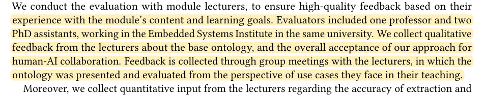
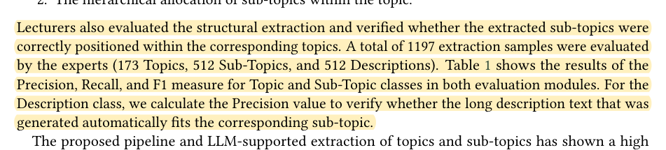
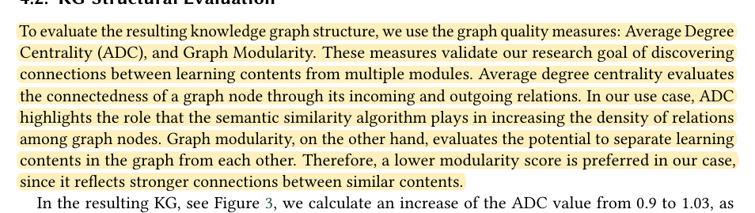

R28 · IEEE education study methods
Experts should verify graph content, not merely its connectivity
LLM-Assisted Knowledge Graph Completion for Curriculum and Domain Modelling in Personalized Higher Education Recommendations
Hasan Abu-Rasheed, Constance Jumbo, Rashed Al Amin, Christian Weber, Veit Wiese, Roman Obermaisser, Madjid Fathi · 2025
IEEE EDUCON 2025; reviewed version: public author manuscript arXiv:2501.12300v1, 10 pages; conference version: 5 pages
What the study investigates
The study transforms curriculum material into a linked knowledge graph, asking whether extracted content and cross-course connections are correct.
How it was studied
Section 4 examines two courses with nine lessons each. One professor and two doctoral teaching assistants evaluate the ontology and extraction. The study checks 1,197 items: 173 topics, 512 subtopics, and 512 descriptions. Topic and subtopic extraction are evaluated through precision, recall, and F1, alongside graph-structure measures.
Findings
Table 1 reports topic and subtopic F1 values of .94–.98. Connectivity also changes, but these are extraction and structure results rather than measurements of learner ability or learning gain.
Limits of the evidence
Three experts do not imply that every item was independently judged by all three. The paper does not report item-level independent overlap or interrater agreement. The 1,197 items are not independent learners. Page references here are to the full author manuscript, not the published layout.
How it informs DualGraph-OSCE
Faculty-approved CUHK requirements establish rule meaning. A stratified subset of formal test inputs can then be checked for event source, actual prompt delivery, correction target, and drug binding, rather than final scores alone. Expert feedback revises development materials; labels for the test set must not be retroactively changed to accommodate model errors. Graph density is not an effectiveness endpoint.
Where to cite it
Evaluation: faculty verification and error localization. Implementation: content review before a rule version is released.
Possible manuscript wording
Following expert verification in an EDUCON graph study, we separate rule-content confirmation from output evaluation and preserve intermediate evidence to identify how extraction errors affect decisions.
[R28·1]This is a manuscript-specific paraphrase, not a quotation from the source. The excerpts below define what the citation supports. The proposed method and its expected benefits are not findings of the cited paper.
Source passages and precise locations
Page numbers refer to physical pages in the saved original PDF, including any repository cover sheets. Compilation page numbers are listed separately. Yellow highlighting marks the passage used for the argument.
R28-E1Expert composition and verification workflow
Original PDF page 6. Highlight compilation page 411. The highlight identifies the passage used here; consult the full original page for its context.

R28-E2Number of extracted items and measurement definitions
Original PDF page 7. Highlight compilation page 412. The highlight identifies the passage used here; consult the full original page for its context.

R28-E3What graph-structure measures actually assess
Original PDF page 7. Highlight compilation page 412. The highlight identifies the passage used here; consult the full original page for its context.
